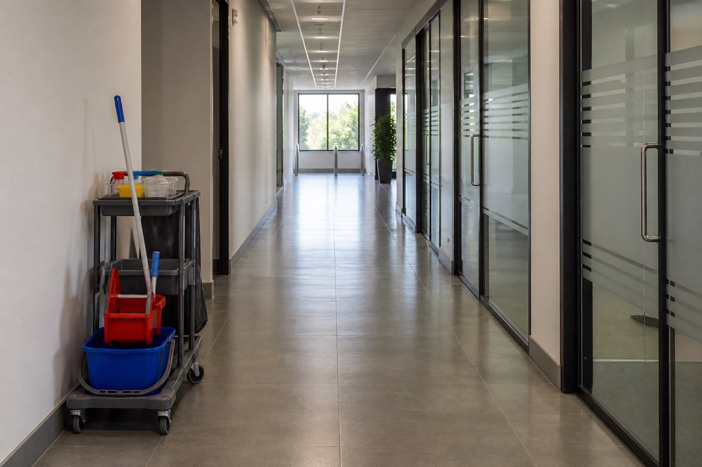

Laufende Reinigung
Unterhaltsreinigung
Die Reinigung, die niemandem auffällt — solange sie stimmt.
Büros, Praxen, öffentliche Bereiche: Sauberkeit, die jeden Tag gleich aussieht, ohne dass Sie daran denken müssen.
Kostenlose Besichtigung · danach Fixpreis

Unterhaltsreinigung ist die Arbeit, über die niemand spricht, solange sie gemacht wird. Fällt sie zwei Wochen aus, spricht plötzlich jeder darüber. Genau deshalb ist sie unser Schwerpunkt: nicht der einmalige große Einsatz, sondern der gleichbleibende Zustand.
Wir arbeiten mit ökologischen Produkten und mit Maschinen, die zum jeweiligen Verfahren passen — nicht mit dem, was gerade im Wagen liegt. Unser Personal wird von geschulten Objektleitern eingewiesen, betreut und regelmäßig kontrolliert. Wenn etwas nicht passt, merken wir es, bevor Sie es melden müssen.
Warum ein fester Plan mehr bringt als ein günstiger Stundensatz
Ein Reinigungsplan hält fest, was wann gemacht wird — täglich, wöchentlich, monatlich. Das klingt bürokratisch und ist der einzige Grund, warum eine Unterhaltsreinigung über Jahre gleich gut bleibt. Ohne Plan wird immer das gereinigt, was gerade auffällt, und der Rest verschwindet langsam.
Fragen zu Unterhaltsreinigung
Arbeiten Sie außerhalb unserer Betriebszeiten?
Ja, das ist sogar der Normalfall. Früh morgens, abends oder am Wochenende — wie es Ihren Ablauf am wenigsten stört.
Bekommen wir immer dasselbe Personal?
So weit es geht, ja. Wer ein Objekt kennt, arbeitet schneller und übersieht weniger. Bei Urlaub und Krankheit springt eingewiesenes Personal ein, kein Fremder.
Passt oft dazu
Sagen Sie uns, worum es geht
Wir kommen vorbei, sehen es uns an — kostenlos und unverbindlich — und nennen danach einen Fixpreis.